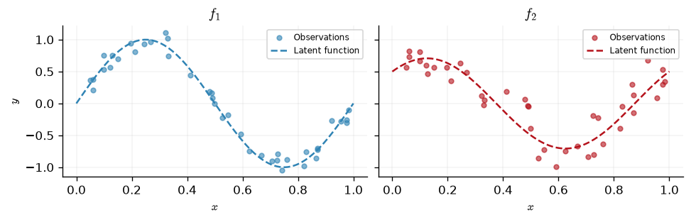
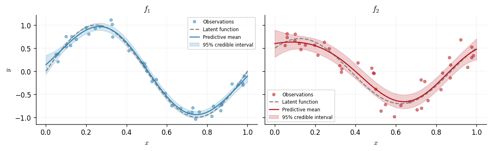
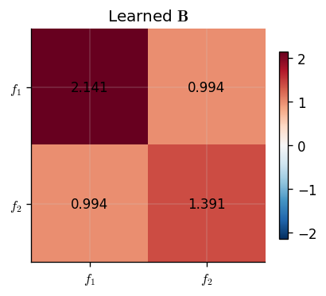
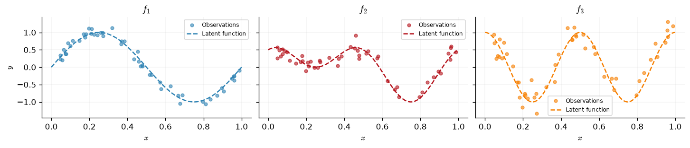
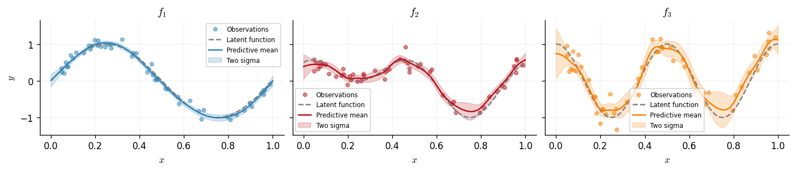
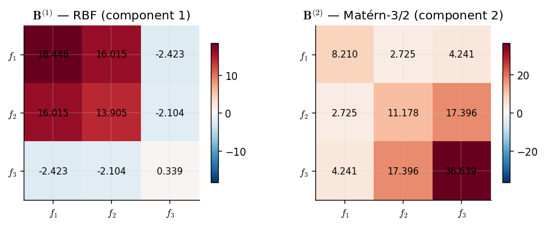

Multi-Output Gaussian Processes
Standard Gaussian process models map a \(D\)-dimensional input to a single scalar output. In many settings, however, we wish to model several correlated output quantities simultaneously. A multi-output Gaussian process captures these correlations so that observations of one output can inform predictions of another.
This notebook introduces the Intrinsic Coregionalization Model (ICM) implemented in GPJax. We construct a synthetic dataset with two correlated outputs, fit an ICM model by optimising the marginal log-likelihood, and inspect the learned coregionalization matrix to see what the model has discovered about the output structure.
from examples.utils import use_mpl_style
from jax import config
import jax.numpy as jnp
import jax.random as jr
from jaxtyping import install_import_hook
import matplotlib as mpl
import matplotlib.pyplot as plt
config.update("jax_enable_x64", True)
with install_import_hook("gpjax", "beartype.beartype"):
import gpjax as gpx
key = jr.key(42)
use_mpl_style()
cols = mpl.rcParams["axes.prop_cycle"].by_key()["color"]
The Intrinsic Coregionalization Model
The ICM assumes that all outputs share a single latent Gaussian process, weighted differently for each output through a positive semi-definite coregionalization matrix \(\mathbf{B} \in \mathbb{R}^{P \times P}\). Given an input-space kernel \(k(\mathbf{x}, \mathbf{x}')\), the multi-output covariance between output \(p\) at input \(\mathbf{x}\) and output \(q\) at input \(\mathbf{x}'\) is $$ \operatorname{cov}\bigl(f_p(\mathbf{x}),\, f_q(\mathbf{x}')\bigr) = B_{pq}\, k(\mathbf{x}, \mathbf{x}'). $$ Stacking all \(N\) observations across \(P\) outputs into a single vector of length \(NP\), the joint covariance matrix takes the Kronecker form $$ \mathbf{K} = \mathbf{B} \otimes \mathbf{K}_{\mathbf{x}\mathbf{x}}, $$ where \(\mathbf{K}_{\mathbf{x}\mathbf{x}}\) is the \(N \times N\) Gram matrix of the base kernel.
The coregionalization matrix is parameterised as $$ \mathbf{B} = \mathbf{W}\mathbf{W}^\top + \operatorname{diag}(\boldsymbol{\kappa}), $$ where \(\mathbf{W} \in \mathbb{R}^{P \times R}\) is a low-rank factor of rank \(R\) and \(\boldsymbol{\kappa} \in \mathbb{R}^P_{>0}\) is a positive diagonal. The rank parameter controls how many latent sources of correlation the model can express. When \(R = 1\) and \(P = 2\), the model captures a single shared direction of variation between the two outputs.
Synthetic dataset
We generate two correlated functions on the interval \([0, 1]\). The first output is \(f_1(x) = \sin(2\pi x)\) and the second is a mixture \(f_2(x) = 0.5\sin(2\pi x) + 0.5\cos(2\pi x)\), so the two outputs share a sinusoidal component. Both are corrupted by Gaussian noise with different standard deviations (\(\sigma_1 = 0.1\), \(\sigma_2 = 0.2\)) to illustrate the per-output noise capability of the multi-output likelihood.
N = 40
P = 2
noise_stds = jnp.array([0.1, 0.2])
key, subkey1, subkey2 = jr.split(key, 3)
x = jnp.sort(jr.uniform(subkey1, shape=(N,), minval=0.0, maxval=1.0)).reshape(-1, 1)
f1 = lambda x: jnp.sin(2 * jnp.pi * x)
f2 = lambda x: 0.5 * f1(x) + 0.5 * jnp.cos(2 * jnp.pi * x)
y1 = f1(x) + jr.normal(subkey1, shape=x.shape) * noise_stds[0]
y2 = f2(x) + jr.normal(subkey2, shape=x.shape) * noise_stds[1]
y = jnp.hstack([y1, y2]) # [N, 2]
D = gpx.Dataset(X=x, y=y)
We plot the two outputs alongside the latent functions that generated them.
xtest = jnp.linspace(0.0, 1.0, 200).reshape(-1, 1)
output_labels = [r"$f_1$", r"$f_2$"]
latent_fns = [f1, f2]
fig, axes = plt.subplots(1, 2, figsize=(8, 2.5), sharey=True)
for i, ax in enumerate(axes):
ax.plot(x, y[:, i], "o", color=cols[i], alpha=0.6, label="Observations", ms=4)
ax.plot(
xtest, latent_fns[i](xtest), color=cols[i], ls="--", label="Latent function"
)
ax.set_title(output_labels[i])
ax.set_xlabel(r"$x$")
ax.legend(loc="best", fontsize=7)
axes[0].set_ylabel(r"$y$")
Text(0, 0.5, '$y$')

Model definition
We construct the ICM model in three steps. First, we build a
CoregionalizationMatrix with \(P = 2\) outputs and rank \(R = 1\). Second, we wrap
an RBF base kernel together with the coregionalization matrix inside an
ICMKernel. Third, we pair a zero-mean GP prior with a MultiOutputGaussian
likelihood, which allows a separate noise variance for each output.
key, subkey = jr.split(key)
coreg = gpx.parameters.CoregionalizationMatrix(num_outputs=P, rank=1, key=subkey)
kernel = gpx.kernels.ICMKernel(
base_kernel=gpx.kernels.RBF(),
coregionalization_matrix=coreg,
)
meanf = gpx.mean_functions.Zero()
prior = gpx.gps.Prior(mean_function=meanf, kernel=kernel)
likelihood = gpx.likelihoods.MultiOutputGaussian(
num_datapoints=N, num_outputs=P, obs_stddev=1.0
)
posterior = prior * likelihood
Before optimisation we verify that the marginal log-likelihood is finite.
Initial negative MLL: 87.658
Optimisation
We optimise the kernel hyperparameters, the coregionalization matrix entries, and
the per-output noise standard deviations by maximising the conjugate marginal
log-likelihood using L-BFGS via fit_scipy.
opt_posterior, history = gpx.fit_scipy(
model=posterior,
objective=lambda p, d: -gpx.objectives.conjugate_mll(p, d),
train_data=D,
)
print(f"Optimised negative MLL: {-gpx.objectives.conjugate_mll(opt_posterior, D):.3f}")
Optimization terminated successfully.
Current function value: -14.390752
Iterations: 24
Function evaluations: 30
Gradient evaluations: 30
Optimised negative MLL: -14.391
Prediction
The multi-output posterior returns predictions as a single Gaussian distribution over a flattened vector of length \(MP\), where \(M\) is the number of test points and \(P\) is the number of outputs. The ordering is output-major: all \(M\) values for output 1 appear first, followed by all \(M\) values for output 2, and so on. We reshape the mean and extract per-output marginal variances from the diagonal of the joint covariance.
M = xtest.shape[0]
pred = opt_posterior.predict(xtest, train_data=D)
pred_mean = pred.mean.reshape(P, M).T # [M, P]
pred_var = jnp.diag(pred.covariance()).reshape(P, M).T # [M, P]
pred_std = jnp.sqrt(pred_var)
We now plot the predictive distribution for each output. The shaded region shows the predictive uncertainty of the model.
fig, axes = plt.subplots(1, 2, figsize=(8, 2.5), sharey=True)
for i, ax in enumerate(axes):
ax.plot(x, y[:, i], "o", color=cols[i], alpha=0.5, label="Observations", ms=4)
ax.plot(xtest, latent_fns[i](xtest), ls="--", color="grey", label="Latent function")
ax.plot(xtest, pred_mean[:, i], color=cols[i], label="Predictive mean")
ax.fill_between(
xtest.squeeze(),
pred_mean[:, i] - 2 * pred_std[:, i],
pred_mean[:, i] + 2 * pred_std[:, i],
color=cols[i],
alpha=0.2,
label="Two sigma",
)
ax.set_title(output_labels[i])
ax.set_xlabel(r"$x$")
ax.legend(loc="best", fontsize=7)
axes[0].set_ylabel(r"$y$")
Text(0, 0.5, '$y$')

Learned coregionalization matrix
The coregionalization matrix \(\mathbf{B}\) encodes the learned correlations between outputs. Its off-diagonal entries indicate how strongly the outputs covary: a large positive entry between outputs \(p\) and \(q\) means they tend to increase together, while a value near zero suggests they are largely independent given the shared input kernel.
We visualise \(\mathbf{B}\) as a heatmap and print its entries.
B_learned = opt_posterior.prior.kernel.coregionalization_matrix.B
fig, ax = plt.subplots(figsize=(3.5, 3))
im = ax.imshow(
B_learned,
cmap="RdBu_r",
vmin=-jnp.max(jnp.abs(B_learned)),
vmax=jnp.max(jnp.abs(B_learned)),
)
for row in range(P):
for col in range(P):
ax.text(
col,
row,
f"{B_learned[row, col]:.3f}",
ha="center",
va="center",
fontsize=10,
)
ax.set_xticks(range(P))
ax.set_yticks(range(P))
ax.set_xticklabels(output_labels)
ax.set_yticklabels(output_labels)
ax.set_title(r"Learned $\mathbf{B}$")
fig.colorbar(im, ax=ax, shrink=0.8)
<matplotlib.colorbar.Colorbar at 0x7fea6c9cad10>

Because \(f_2\) is defined as a mixture that includes a scaled copy of \(f_1\), we expect the model to recover a positive correlation between the two outputs. The diagonal entries reflect each output's marginal variance contribution from the shared latent process.
From ICM to LCM
The Intrinsic Coregionalization Model is powerful but limited: it assumes that all inter-output correlations are explained by a single shared latent Gaussian process. When the outputs are driven by multiple independent sources of variation — for example, a slow trend and a fast oscillation — a single latent kernel cannot capture both length-scales simultaneously. The ICM must compromise, and the resulting fit degrades.
The Linear Model of Coregionalization (LCM) removes this limitation by combining \(Q\) independent latent GPs, each equipped with its own input-space kernel and its own output-space coregionalization matrix. The additional components give the model the flexibility to assign distinct spectral characteristics to different sources of inter-output coupling.
The Linear Model of Coregionalization
Given \(Q\) latent kernels \(\{k_q\}_{q=1}^{Q}\) and \(Q\) coregionalization matrices \(\{\mathbf{B}^{(q)}\}_{q=1}^{Q}\), each of size \(P \times P\), the LCM defines the multi-output covariance between output \(p\) at input \(\mathbf{x}\) and output \(r\) at input \(\mathbf{x}'\) as $$ \operatorname{cov}\bigl(f_p(\mathbf{x}),\, f_r(\mathbf{x}')\bigr) = \sum_{q=1}^{Q} B^{(q)}_{pr}\, k_q(\mathbf{x}, \mathbf{x}'). $$
Stacking all \(N\) observations across \(P\) outputs into a single vector of length \(NP\), the joint covariance matrix is the sum of Kronecker products $$ \mathbf{K} = \sum_{q=1}^{Q} \mathbf{B}^{(q)} \otimes \mathbf{K}^{(q)}_{\mathbf{x}\mathbf{x}}, $$ where \(\mathbf{K}^{(q)}_{\mathbf{x}\mathbf{x}}\) is the \(N \times N\) Gram matrix of the \(q\)-th latent kernel.
Relationship to ICM
Setting \(Q = 1\) recovers the ICM exactly: there is one kernel, one
coregionalization matrix, and the covariance has pure Kronecker structure. GPJax
exploits this: when an LCMKernel has a single component, the compute engine
returns a Kronecker operator, preserving the efficient \(\mathcal{O}(N^3 + P^3)\)
decomposition. For \(Q > 1\) the sum of Kronecker products no longer admits a
closed-form Kronecker inverse, so GPJax materialises the full \(NP \times NP\) dense
matrix and solves via a standard Cholesky factorisation in
\(\mathcal{O}((NP)^3)\).
Per-component coregionalization
Each coregionalization matrix is parameterised as before: $$ \mathbf{B}^{(q)} = \mathbf{W}^{(q)}{\mathbf{W}^{(q)}}^\top + \operatorname{diag}(\boldsymbol{\kappa}^{(q)}), $$ where \(\mathbf{W}^{(q)} \in \mathbb{R}^{P \times R_q}\) is a low-rank factor and \(\boldsymbol{\kappa}^{(q)} \in \mathbb{R}^P_{>0}\) a positive diagonal. The rank \(R_q\) of each component can be chosen independently. A component with rank 1 captures one direction of inter-output correlation at the length-scale determined by \(k_q\); increasing the rank allows richer coupling patterns at that scale.
A three-output synthetic dataset
To demonstrate the advantage of multiple latent components, we construct a dataset with three outputs driven by two distinct latent functions:
- \(g_1(x) = \sin(2\pi x)\) — a smooth, low-frequency oscillation,
- \(g_2(x) = \cos(4\pi x)\) — a faster oscillation at double the frequency.
The three observed outputs are mixtures of these latent functions: \begin{align} f_1(x) &= g_1(x), \ f_2(x) &= 0.5\,g_1(x) + 0.5\,g_2(x), \ f_3(x) &= g_2(x). \end{align} Outputs 1 and 3 are each dominated by a single latent source, while output 2 is a balanced mixture of both. A single-component ICM kernel would struggle here because it cannot separate the two frequency scales. An LCM with \(Q = 2\) components — each learning a different length-scale — should recover the latent structure.
N_lcm = 50
P_lcm = 3
noise_stds_lcm = jnp.array([0.1, 0.15, 0.2])
key, subkey1, subkey2, subkey3 = jr.split(key, 4)
x_lcm = jnp.sort(jr.uniform(subkey1, shape=(N_lcm,), minval=0.0, maxval=1.0)).reshape(
-1, 1
)
g1 = lambda x: jnp.sin(2 * jnp.pi * x)
g2 = lambda x: jnp.cos(4 * jnp.pi * x)
f1_lcm = lambda x: g1(x)
f2_lcm = lambda x: 0.5 * g1(x) + 0.5 * g2(x)
f3_lcm = lambda x: g2(x)
y1_lcm = f1_lcm(x_lcm) + jr.normal(subkey1, shape=x_lcm.shape) * noise_stds_lcm[0]
y2_lcm = f2_lcm(x_lcm) + jr.normal(subkey2, shape=x_lcm.shape) * noise_stds_lcm[1]
y3_lcm = f3_lcm(x_lcm) + jr.normal(subkey3, shape=x_lcm.shape) * noise_stds_lcm[2]
y_lcm = jnp.hstack([y1_lcm, y2_lcm, y3_lcm]) # [N, 3]
D_lcm = gpx.Dataset(X=x_lcm, y=y_lcm)
We plot the three outputs alongside their latent functions.
xtest_lcm = jnp.linspace(0.0, 1.0, 200).reshape(-1, 1)
output_labels_lcm = [r"$f_1$", r"$f_2$", r"$f_3$"]
latent_fns_lcm = [f1_lcm, f2_lcm, f3_lcm]
fig, axes = plt.subplots(1, 3, figsize=(12, 2.5), sharey=True)
for i, ax in enumerate(axes):
ax.plot(
x_lcm, y_lcm[:, i], "o", color=cols[i], alpha=0.6, label="Observations", ms=4
)
ax.plot(
xtest_lcm,
latent_fns_lcm[i](xtest_lcm),
color=cols[i],
ls="--",
label="Latent function",
)
ax.set_title(output_labels_lcm[i])
ax.set_xlabel(r"$x$")
ax.legend(loc="best", fontsize=7)
axes[0].set_ylabel(r"$y$")
Text(0, 0.5, '$y$')

LCM model definition
We build an LCM with \(Q = 2\) components. The first component uses an RBF kernel,
which is well-suited to capture the smooth, low-frequency latent function \(g_1\).
The second component uses a Matérn-3/2 kernel, whose shorter default length-scale
can adapt to the faster oscillation in \(g_2\). Each component has its own
CoregionalizationMatrix with \(P = 3\) outputs and rank \(R = 1\), so each component
captures one direction of inter-output correlation at its characteristic
length-scale.
key, subkey1, subkey2 = jr.split(key, 3)
coreg1 = gpx.parameters.CoregionalizationMatrix(num_outputs=P_lcm, rank=1, key=subkey1)
coreg2 = gpx.parameters.CoregionalizationMatrix(num_outputs=P_lcm, rank=1, key=subkey2)
lcm_kernel = gpx.kernels.LCMKernel(
kernels=[gpx.kernels.RBF(), gpx.kernels.Matern32()],
coregionalization_matrices=[coreg1, coreg2],
)
meanf_lcm = gpx.mean_functions.Zero()
prior_lcm = gpx.gps.Prior(mean_function=meanf_lcm, kernel=lcm_kernel)
likelihood_lcm = gpx.likelihoods.MultiOutputGaussian(
num_datapoints=N_lcm, num_outputs=P_lcm, obs_stddev=1.0
)
posterior_lcm = prior_lcm * likelihood_lcm
Before optimisation we verify that the marginal log-likelihood is finite.
Initial negative MLL: 167.936
Optimisation
As with the ICM example, we maximise the conjugate marginal log-likelihood using
fit_scipy. The optimiser now has more parameters to tune: two sets of kernel
hyperparameters and two coregionalization matrices.
opt_posterior_lcm, history_lcm = gpx.fit_scipy(
model=posterior_lcm,
objective=lambda p, d: -gpx.objectives.conjugate_mll(p, d),
train_data=D_lcm,
)
print(
"Optimised negative MLL: "
f"{-gpx.objectives.conjugate_mll(opt_posterior_lcm, D_lcm):.3f}"
)
/home/runner/work/GPJax/GPJax/.venv/lib/python3.11/site-packages/scipy/optimize/_minimize.py:779: OptimizeWarning: Maximum number of iterations has been exceeded.
res = _minimize_bfgs(fun, x0, args, jac, callback, **options)
Current function value: -34.358148
Iterations: 500
Function evaluations: 573
Gradient evaluations: 573
Optimised negative MLL: -34.358
Prediction
The multi-output posterior returns predictions as a single Gaussian distribution over a flattened vector of length \(MP\), where \(M\) is the number of test points. The ordering is output-major: all \(M\) values for output 1 appear first, then output 2, then output 3. We reshape accordingly.
M_lcm = xtest_lcm.shape[0]
pred_lcm = opt_posterior_lcm.predict(xtest_lcm, train_data=D_lcm)
pred_mean_lcm = pred_lcm.mean.reshape(P_lcm, M_lcm).T
pred_var_lcm = jnp.diag(pred_lcm.covariance()).reshape(P_lcm, M_lcm).T
pred_std_lcm = jnp.sqrt(pred_var_lcm)
We now plot the predictive distribution for each of the three outputs. The shaded region shows the predictive uncertainty.
fig, axes = plt.subplots(1, 3, figsize=(12, 2.5), sharey=True)
for i, ax in enumerate(axes):
ax.plot(
x_lcm, y_lcm[:, i], "o", color=cols[i], alpha=0.5, label="Observations", ms=4
)
ax.plot(
xtest_lcm,
latent_fns_lcm[i](xtest_lcm),
ls="--",
color="grey",
label="Latent function",
)
ax.plot(xtest_lcm, pred_mean_lcm[:, i], color=cols[i], label="Predictive mean")
ax.fill_between(
xtest_lcm.squeeze(),
pred_mean_lcm[:, i] - 2 * pred_std_lcm[:, i],
pred_mean_lcm[:, i] + 2 * pred_std_lcm[:, i],
color=cols[i],
alpha=0.2,
label="Two sigma",
)
ax.set_title(output_labels_lcm[i])
ax.set_xlabel(r"$x$")
ax.legend(loc="best", fontsize=7)
axes[0].set_ylabel(r"$y$")
Text(0, 0.5, '$y$')

Learned coregionalization structure
Unlike the ICM, which produces a single \(\mathbf{B}\) matrix, the LCM yields one coregionalization matrix per component. Each \(\mathbf{B}^{(q)}\) tells us how the \(q\)-th latent process couples the outputs. By inspecting these matrices we can recover which outputs share each latent source.
We expect the component paired with the RBF kernel (smooth, low-frequency) to show strong coupling between outputs 1 and 2, since both contain \(g_1\). The Matérn-3/2 component (higher frequency) should couple outputs 2 and 3, which share \(g_2\).
kernel_names = ["RBF (component 1)", "Matérn-3/2 (component 2)"]
fig, axes_B = plt.subplots(1, 2, figsize=(8, 3))
for idx, (cm, _k) in enumerate(opt_posterior_lcm.prior.kernel.components):
B_q = cm.B
ax = axes_B[idx]
im = ax.imshow(
B_q,
cmap="RdBu_r",
vmin=-jnp.max(jnp.abs(B_q)),
vmax=jnp.max(jnp.abs(B_q)),
)
for row in range(P_lcm):
for col in range(P_lcm):
ax.text(
col,
row,
f"{B_q[row, col]:.3f}",
ha="center",
va="center",
fontsize=9,
)
ax.set_xticks(range(P_lcm))
ax.set_yticks(range(P_lcm))
ax.set_xticklabels(output_labels_lcm)
ax.set_yticklabels(output_labels_lcm)
ax.set_title(rf"$\mathbf{{B}}^{{({idx + 1})}}$ — {kernel_names[idx]}")
fig.colorbar(im, ax=ax, shrink=0.8)

The two learned coregionalization matrices reveal the latent structure of the data. Each component has specialised: one captures the low-frequency correlations driven by \(g_1\), and the other captures the higher-frequency correlations driven by \(g_2\). Output 2, which depends on both latent functions, appears with non-negligible weight in both matrices — exactly as expected.
System configuration
Author: Thomas Pinder
Last updated: Sun, 26 Jul 2026
Python implementation: CPython
Python version : 3.11.15
IPython version : 9.9.0
gpjax : 0.17.0
jax : 0.9.0
jaxtyping : 0.3.6
matplotlib: 3.10.8
Watermark: 2.6.0
We currently have some availability for consulting on how Gaussian processes, Bayesian modelling, and GPJax can be integrated into your team's work. If this sounds relevant to your work, book an introductory call. These calls are for consulting inquiries only. For technical usage questions and free community support, please use GitHub Discussions and the documentation below.